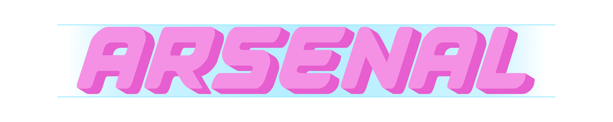

< Back to Main
DescriptionA small survivors-like about a space girl fighting aliens on the moon. Kill enemies to absorb their energy, and use that energy to craft yourself a new gun when ammo gets low. The more energy used when you craft the more points you gain. If your ammo gets too low you start using your health as ammo so be careful. Credits0_stamina(me!) (he/him): Director, Programmer, Game Designer soyemilky (she/her): Everything Artists Post-MortemThis is mostly a game to can do what it takes to make a game and publish it. Despite imperfections, and time limits I did what I needed to and I hated it. Quality control is almost non-existent, intentionally so. I made this game in 4 months, half of which was spent on a design and art style that I ended up not even using. Despite challeneges and short comings, I made a game that is playable on steam which is good enough for now. |